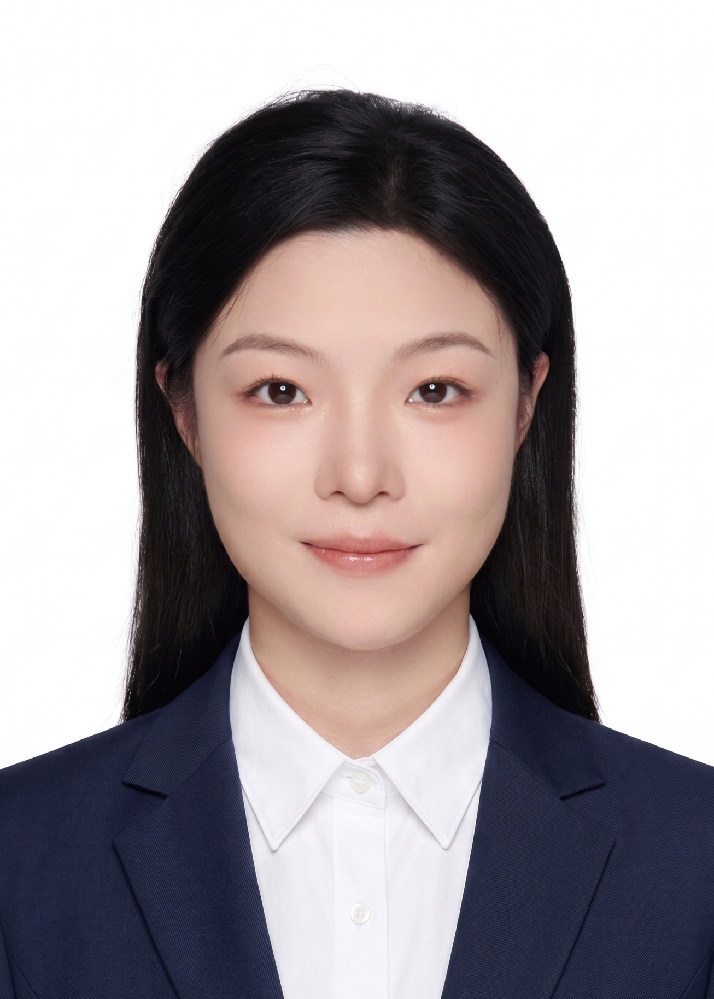
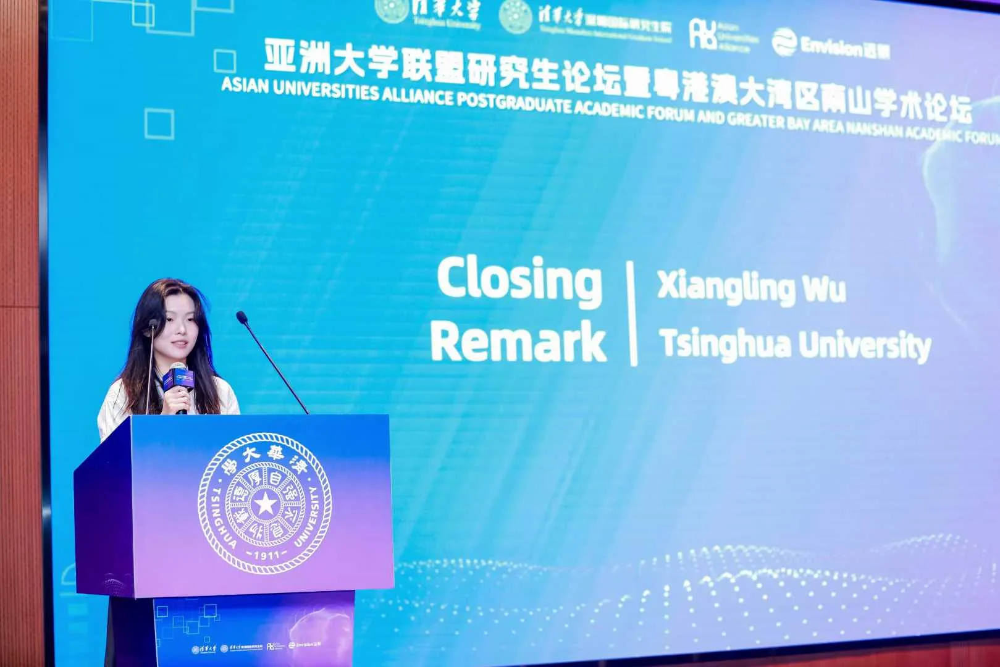

Scientific depth
9 academic papers and 10+ intellectual-property outcomes grounded in mechanism, experimentation and evidence.
Tsinghua Ph.D. candidate with experience across scientific innovation, technology commercialization and deep-tech investment research—spanning dual-carbon solutions, AI-related hardware and advanced manufacturing.

9 academic papers and 10+ intellectual-property outcomes grounded in mechanism, experimentation and evidence.
A four-year path from R&D to demonstration, including a process solution that reduced operating costs by 77%.
Research experience spanning advanced semiconductor packaging, AI-related hardware and fundamental industry analysis.
From dual-carbon infrastructure and bio-based materials to AI-enabling semiconductor research.
Conventional nitrogen removal depends on costly external carbon sources and carries a high carbon footprint, while food-waste hydrolysate remains underutilized.
Low agricultural-waste utilization, high fresh-food losses and pollution from conventional packaging demand an integrated material solution.
Advanced packaging is moving from a process step to a system-level performance lever, but technology routes, capacity constraints and competitive moats differ materially.
Selected progress across research, institutional coverage, awards and academic communication.

Research creates impact when complex ideas can be communicated clearly to specialists, collaborators and decision-makers.
A Tsinghua SIGS feature profiled my work at the intersection of low-carbon wastewater treatment and solid-waste valorization, highlighting the path from mechanism to scaled application in Shenzhen.
Won First Prize in the fourth Zero-Carbon Campus Design Competition, a national-facing platform connecting low-carbon ideas with deployable campus and community scenarios.
One integrated ability: moving from scientific evidence to industrial reality and investment judgment.
Read experiments, data and technical bottlenecks with the depth of a researcher.
Translate performance into process feasibility, cost, adoption and commercialization.
Connect technology routes with industry structure, market space, competitive moats and risk.
Resilience, competitive drive, curiosity and insight—the qualities behind the professional profile.